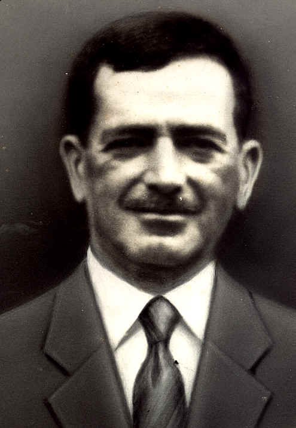

Você não é o único a não conhecer Arlindo Ribeiro, porque entre 10 alunos do Colégio 1 sabe quem foi este homem e porque o Colégio Agrícola de Guarapuava leva o nome dele.
Arlindo Martins Ribeiro nasceu no dia 31 do mês de março do ano de 1874, no distrito de Iguapé-São Paulo. Muito jovem tornou-se viajante de loja de quitanda (tropeiro), percorreu todo o Sul do Brasil no lombo de um burro. Em uma destas viagens, veio até Guarapuava e casou-se.
Em sociedade com o seu sogro criou a loja “Branco & Arlindo” na praça da Matriz atual praça 9 de Dezembro. Mais tarde os dois explorariam a pecuária na fazenda “Trindade” (onde se encontra o marco histórico da fundação da cidade de Guarapuava).
De 1908 à 1918 foi camarista e participou da criação do distrito da Palmerinha.
Em 1917 foi eleito deputado estadual, apresentando importantes projetos, e em 1921, como presidente da câmara, substituiu o Prefeito Municipal Dr. Romualdo Baraúna até o fim do seu mandato. Nesta ocasião organizou o programa comemorativo do 1º centenário da independência, e mandou publicar o esboço da história de Guarapuava.>
Em 30 de junho de 1932, o interventor Federal Manoel Ribas, nomeou-lhe prefeito de “Guarapuava” foi quem mandou confeccionar o brasão de Guarapuava sem falar de outras obras públicas.
>Faleceu em 30/06/1937 e seu nome foi dado à antiga rua Garibaldi e à Escola de Trabalhadores Rurais, hoje conhecida em todo o Brasil por Colégio Agrícola Estadual Arlindo Ribeiro.
(FONTE: INFORMATIVO CAEAR)